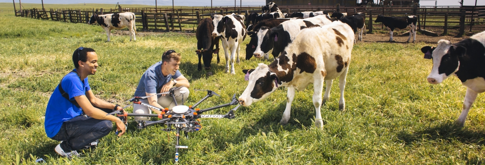

What is CITRIS?
The Center of Information Technology Research in the Interest of Society

CITRIS is a fully functioning organized research unit with the University of California Merced and is recognized as one of the CITRIS campuses – UC Merced, UC Berkeley, UC Davis, and UC Santa Cruz. CITRIS develops synergistic partnerships with academic institutions and corporate collaborators worldwide to collectively produce innovative solutions to challenges in four primary sectors: Sustainable Infrastructure, People and Robots, Connected Communities, and Health.
CITRIS at UC Merced addresses California’s most pressing societal and environmental problems by leveraging cutting-edge technologies, incorporating a convergence of the following focuses: Student-Driven Initiatives, Seed Grants & Faculty Research, and Corporate Partnerships.
Our History
Since its creation in 2001 as one of four interdisciplinary institutes for science and innovation at the University of California, CITRIS has demonstrated an impressive return on investment by any measure. Through collaboration with industry, government agencies, and international partners, CITRIS has enabled innovations in nanotechnology, computer science, engineering, manufacturing, social media, and other sectors.
In 2016, we recognize the Banatao Institute as an integral part of our affiliated UC campuses. In alignment with the goals and values of Dado and Maria Banatao, the Banatao Institute at CITRIS leverages University of California expertise and IT solutions for the benefit of developing regions in the U.S. and abroad. This widening sphere of influence is celebrated in our new name, “CITRIS and the Banatao Institute,” which debuted across the four campuses in Fall, 2016.
Our Campus
University of California’s newest campus. UC Merced continues to grow and serve a growing number of undergraduate and graduate students from the San Joaquin Valley, the state, the nation, and the world.
At UC Merced, learning goes well beyond textbooks and classrooms. With a rapidly rowing group of professors, researchers and postdoctoral students -- and even more rapidly growing student body -- UC Merced is poised to become a premier center for new knowledge and critical breakthroughs beyond the Central Valley. Faculty members have access to world-class equipment, resources and a dedicated team of staff members to help them find funding or conduct their work.
Contact Us
Feel free to contact us at citris@ucmerced.edu. Our office is located on the third floor of the Classroom and Office Building 1. The full address is:
University of California, Merced
5200 North Lake Road
SRE 311
Merced, California 95340